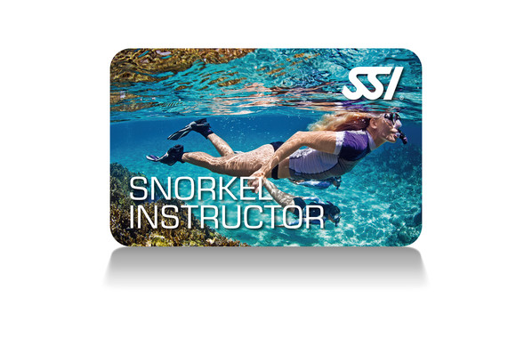

Cursos Profesionales
Transforma tu pasión por el buceo en tu profesión. Desde Dive Guide hasta Instructor certificado SSI, estos programas te preparan para liderar, enseñar y guiar a buceadores de todos los niveles.
La formación profesional en buceo es un camino de crecimiento personal y oportunidades laborales. SSI te ofrece un pathway completo desde los primeros pasos hasta convertirte en un profesional del buceo.

Nuestros Cursos Profesionales
Haz clic en cada curso para ver más información detallada.
Dive Guide
Guiar grupos de buceadores certificados
Dive Control Specialist
Assistant Instructor, enseñar programas
Snorkeling Instructor
Programas entry-level de snorkeling
Instructor Training Course
Open Water Instructor, evaluación
Divemaster Instructor
Crossover otras agencias, DCS Instructor
Dive Control Specialist Instructor
Formar Assistant Instructor/DCS
Descripción
El programa Dive Guide SSI te proporciona las habilidades para guiar grupos de buceadores certificados en entornos de aguas abiertas. Es tu primer paso en el pathway profesional de SSI.
Como Dive Guide, serás capaz de planificar y liderar inmersiones para buceadores certificados, asegurándote de que todos disfruten de manera segura y placentera.
Contenido del curso
- Planificación de inmersiones para grupos
- Briefings y debriefings profesionales
- Gestión de grupos bajo el agua
- Evaluación de condiciones ambientales
- Procedimientos de emergencia como líder
- Supervisión de buceadores en formación
Requisitos previos
- Certificación Advanced Adventurer o equivalente
- Certificación nitrox
- 40 inmersiones registradas
- Ser mayor de 15 años
Información adicional
- Duración: 3-4 días
- Nivel: Profesional
- Certificación internacional SSI
Descripción
El Dive Control Specialist (DCS) de SSI es un profesional del buceo que puede actuar como Assistant Instructor y enseñar bajo supervisión todos los programas de entrada de nivel SSI.
Es el nivel profesional que te permite empezar a enseñar realmente, siempre bajo la supervisión de un Instructor certificado.
Contenido del curso
- Técnicas de enseñanza en confined water
- Metodología de formación de buceadores
- Evaluación de habilidades de estudiantes
- Gestión del tiempo en enseñanza
- Supervisión de estudiantes en inmersiones
- Procedimientos de seguridad en enseñanza
Requisitos previos
- Certificación Dive Guide
- Certificación Stress & Rescue
- 100+ inmersiones registradas
- Ser mayor de 17 años
Información adicional
- Duración: 4-5 días
- Nivel: Assistant Instructor
- Certificación internacional SSI
Descripción
La intención del programa Snorkeling Instructor SSI es proporcionar a los candidatos el conocimiento y la formación necesaria para impartir programas de entry-level de snorkeling de una manera segura y agradable.
Es perfecto para quienes quieren introducir a nuevas personas al mundo submarino sin necesidad de certificaciones de instructor completo.
Contenido del curso
- Técnicas de enseñanza de snorkeling
- Seguridad en actividades de snorkeling
- Equipamiento de snorkeling
- Comunicación con estudiantes
- Evaluación de habilidades básicas
Requisitos previos
- Ser mayor de 16 años
- Certificación de snorkeling o equivalente
- Demostrar habilidades de snorkeling competentes
Información adicional
- Duración: 2-3 días
- Nivel: Instructor
- Certificación internacional SSI
Descripción
El Instructor Training Course (ITC) de SSI te prepara para convertirte en un Open Water Instructor certificado. Es el curso que te da las habilidades y conocimientos para enseñar de forma independiente.
Incluye evaluación práctica donde demostrarás tus habilidades de enseñanza ybuceo frente a un evaluator trainer.
Contenido del curso
- Técnicas de presentación de академический material
- Prácticas de enseñanza en aula y confined water
- Evaluación de habilidades de estudiantes
- Administración de programas de certificación
- Marketing y gestión de estudiantes
- Evaluación práctica con instructor trainer
Requisitos previos
- Certificación Dive Control Specialist
- Certificación React Right (o Basic Life Support DAN)
- 120+ inmersiones registradas
- Ser mayor de 18 años
- Kit Digital Science of Diving
Información adicional
- Duración: 5-7 días
- Nivel: Open Water Instructor
- Certificación internacional SSI
Descripción
El Divemaster Instructor (DMI) es el siguiente nivel de instructor después de Advanced Open Water Instructor (AOWI). Además de las funciones realizadas por un Advanced Open Water Instructor en activo, los Divemaster Instructors pueden impartir el programa Divemaster Crossover para candidatos de otras agencias reconocidas.
También pueden solicitar la participación en el programa Dive Control Specialist Instructor.
Contenido del curso
- Formación crossover desde otras agencias
- Evaluación de candidatos de otras agencias
- Supervisión de Dive Control Specialists
- Coaching y mentoría de instructores
- Gestión de programas de certificación
Requisitos previos
- Certificación Advanced Open Water Instructor (AOWI)
- Ser mayor de 18 años
- 200+ inmersiones registradas
- Kit Digital Science of Diving (si no está certificado como Science of Diving Instructor)
Información adicional
- Duración: 3-4 días
- Nivel: Instructor Senior
- Certificación internacional SSI
Descripción
Este programa proporciona a los candidatos los conocimientos, conceptos y formación necesaria para organizar y realizar programas de formación para Assistant Instructor / Dive Control Specialist.
Los candidatos aprenden cómo evaluar y dar consejos a candidatos de Profesional de Buceo en varios entornos acuáticos y académicos. Los candidatos que finalizan este programa reciben la certificación Assistant Instructor / Dive Control Specialist Instructor SSI.
Contenido del curso
- Evaluación de candidatos Dive Control Specialist
- Técnicas de coaching y mentoría
- Diseño de programas de formación
- Evaluación en múltiples entornos
- Administración de certificación DCS
Requisitos previos
- Certificación Divemaster Instructor (DMI)
- Ser mayor de 18 años
- 300+ inmersiones registradas
- Estatus de instructor activo
Información adicional
- Duración: 4-5 días
- Nivel: Instructor Trainer
- Certificación internacional SSI